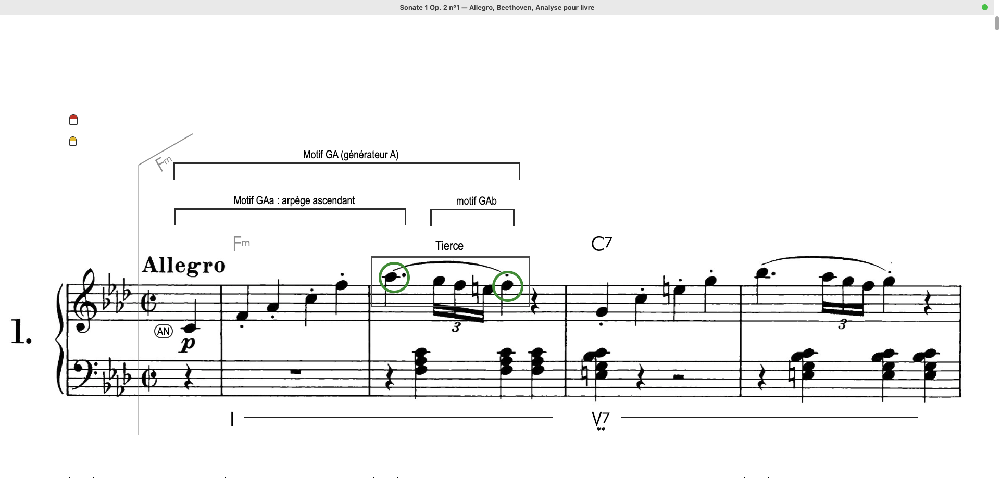
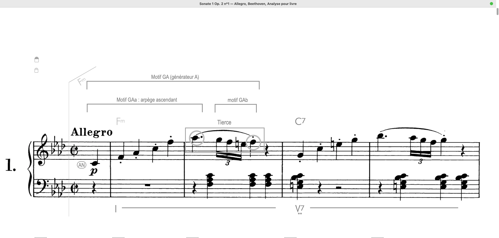
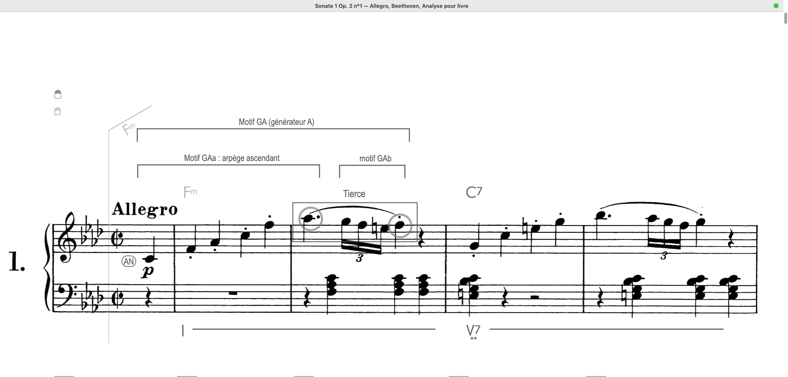

B — Transparence seule 45 %
Couleurs gardées, marques à 45 % d'opacité.

Sans mode gris.

Couleurs retirées, marques à 45 % d'opacité.
Couleurs gardées, marques à 45 % d'opacité.
Couleurs retirées, contraste réduit, éclairci ; pas de transparence (la partition ne traverse pas les marques).

Comme A, moins atténué.
